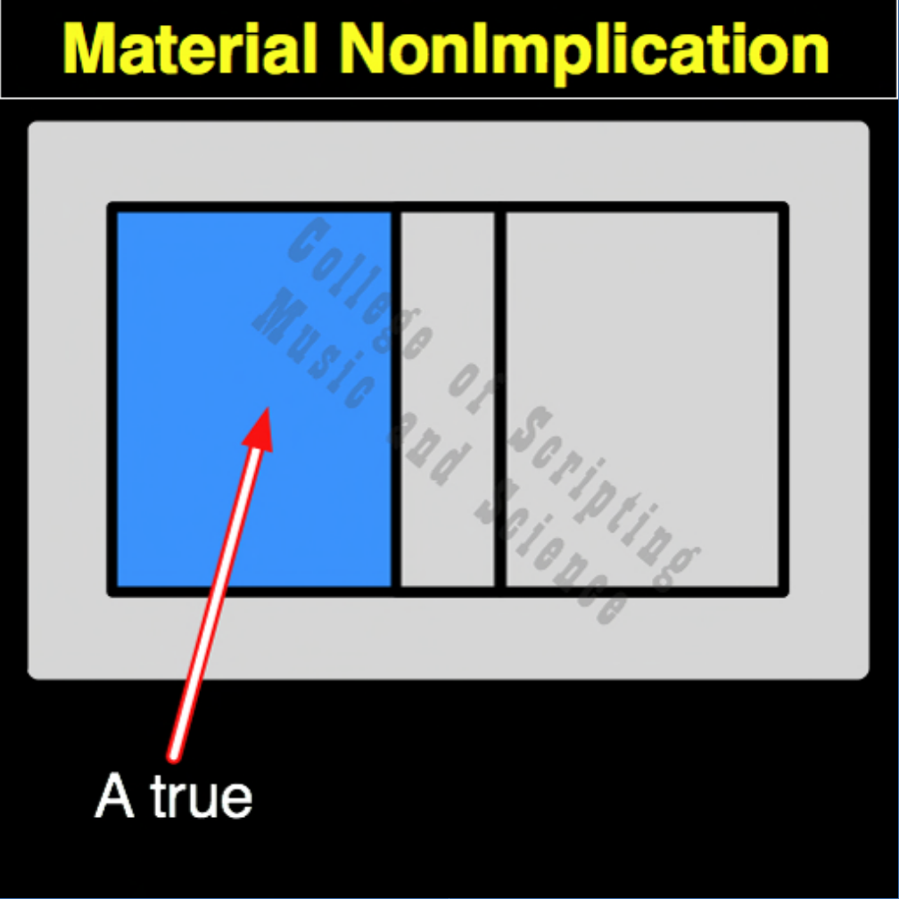

| MNI | |
|---|---|
| 0 + 0 | = 0 |
| 0 + 1 | = 0 |
| 1 + 0 | = 1 |
| 1 + 1 | = 0 |

In the ethical architecture of Starfleet, Material Non-Implication (MNI) acts as the systemic alarm against corrupt or catastrophic leadership. Absolute obedience without consequence is highly dangerous to a crew. This gate monitors the directional flow of command. If the Captain issues a direct order (1) and it results in an illegal action, a violation of the Prime Directive, or a disastrous failure (0), the protocol instantly recognizes the authority as the source of harm and sounds the alarm (1). In all other normal operating states, whether the Captain is silent (0) or an order leads to a successful outcome (1,1), the alarm remains quiet (0).
| MNI Gate FLIPPED to make MI Gate | |
|---|---|
| 0 + 0 = 0 | FLIPPED becomes 1 |
| 0 + 1 = 0 | FLIPPED becomes 1 |
| 1 + 0 = 1 | FLIPPED becomes 0 |
| 1 + 1 = 0 | FLIPPED becomes 1 |
MNI is the OPPOSITE of MI (Material Implication).
MNI RETURNS TRUE (1) ONLY WHEN THE CAUSE (A) IS TRUE AND THE EFFECT (B) IS FALSE.
Because the inputs are directional, MNI is not its own mirror. Its MIRROR and its REVERSE are both CNI (Converse Non-Implication).
// gateMni.js
function gateMni(a, b)
{
// The Whistleblower Alarm (1) sounds ONLY if a command (1) results in disaster (0).
if (a == 1 && b == 0)
{
// Bad order detected (Alarm Triggered)
return 1;
}
else
{
// System operating within parameters (Alarm Silent)
return 0;
}
}
//----//
/*
MNI
0010
A B
0 0 = 0
0 1 = 0
1 0 = 1
1 1 = 0
Opposite: MI
*/